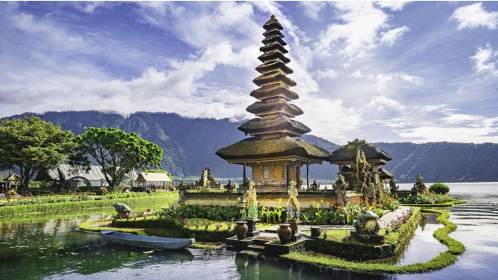
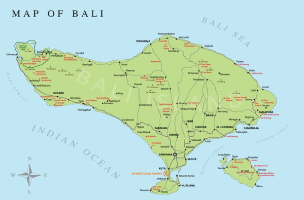

Sejarah

Sejarah Bali dimulai dari zaman prasejarah yang dibuktikan oleh peninggalan alat batu di Gelgel dan Cekik,
lalu berkembang pesat sejak abad ke-8 seiring masuknya pengaruh Hindu-Buddha dari India dan Jawa yang memicu
berdirinya kerajaan-kerajaan lokal seperti Dinasti Warmadewa.
Pengaruh Jawa semakin kuat setelah Kerajaan Majapahit menguasai Bali pada abad ke-14 di bawah pimpinan Mahapatih Gajah Mada,
hingga akhirnya keruntuhan Majapahit mendorong migrasi besar-besaran para bangsawan, seniman, dan pendeta ke Bali yang memperkaya norma budaya, tata kota, serta tradisi keagamaannya.
Pada abad ke-19, bangsa Belanda mulai mengintervensi Bali hingga memicu perlawanan sengit rakyat Bali yang dikenal sebagai Perang Puputan,
sampai akhirnya pulau ini terintegrasi penuh ke dalam Negara Kesatuan Republik Indonesia setelah masa kemerdekaan dan berkembang menjadi pusat kebudayaan serta pariwisata dunia.
Geografis

Pulau Bali terletak di antara Pulau Jawa di sebelah barat dan Pulau Lombok di sebelah timur, diapit oleh Laut Bali di bagian utara serta Samudra Hindia di selatan.
Wilayahnya didominasi oleh bentang alam pegunungan vulkanik yang membentang dari barat ke timur, dengan Gunung Agung sebagai titik tertinggi sekaligus gunung berapi aktif utama di pulau ini.
Keberadaan rantai pegunungan tersebut membagi Bali menjadi dua kawasan dengan karakteristik yang cukup berbeda, yaitu wilayah utara yang berlereng relatif curam dengan garis pantai sempit serta wilayah selatan yang berupa dataran rendah subur.
Kondisi topografi yang subur di bagian selatan dialiri oleh banyak sungai utama yang menjadi tumpuan sistem irigasi tradisional subak untuk pertanian padi.
Di sepanjang pesisirnya, Bali dikelilingi oleh pantai berpasir putih di bagian selatan serta pantai berpasir hitam vulkanik di kawasan utara dan timur.
Selain itu, iklim tropis dengan dua musim yang berganti sepanjang tahun turut mendukung keanekaragaman hayati, keindahan alam, serta aktivitas masyarakatnya di berbagai sektor.
Wisata
Pariwisata di Pulau Bali merupakan penggerak utama perekonomian daerah yang mengandalkan perpaduan antara keindahan alam, kekayaan seni budaya, dan keramahan masyarakatnya.
Destinasi wisatanya sangat beragam, mulai dari kawasan selatan yang terkenal dengan pantai berpasir putih dan hiburan modern, kawasan Ubud yang menjadi pusat kebudayaan serta ketenangan alam, hingga wilayah utara dan timur yang menawarkan pesona bahari serta keindahan gunung berapi.
Dukungan fasilitas pendukung seperti resor berbintang, restoran internasional, hingga konektivitas penerbangan global menjadikan Bali sebagai salah satu destinasi terpopuler di dunia.
Meskipun demikian, pesatnya sektor pariwisata ini juga menghadirkan tantangan tersendiri, seperti kemacetan lalu lintas, komersialisasi budaya, serta pengelolaan lingkungan, sehingga pemangku kepentingan terus berupaya mendorong konsep pariwisata berkelanjutan yang tetap menjaga kelestarian adat dan alam Bali.
Pura Luhur Uluwatu

Pura Luhur Uluwatu menawarkan pesona bangunan pura Hindu kuno yang berdiri megah di puncak tebing karang setinggi 70 meter di atas Samudra Hindia,
lengkap dengan kawasan hutan lindung yang dihuni oleh kawanan kera liar. Di lokasi wisata ini, para pengunjung dapat melakukan beragam kegiatan seperti menyusuri jalan setapak tepi tebing untuk menikmati panorama matahari terbenam (sunset),
menyaksikan pertunjukan Tari Kecak spektakuler berlatar pemandangan laut setiap sore, berfoto, hingga beribadah bagi umat Hindu. Pura ini terbuka untuk siapa saja, baik wisatawan domestik maupun mancanegara dari berbagai latar belakang,
dengan ketentuan umum wajib mengenakan kain sarung dan selendang sopan yang disediakan di pintu masuk, serta dapat dikunjungi setiap hari dari hari Senin sampai Minggu mulai pukul 07.00 hingga 19.00 WITA.
Tanah Lot

Tanah Lot menyajikan pemandangan unik berupa pura Hindu yang berdiri kokoh di atas bongkahan batu karang besar di lepas pantai,
goa air suci di bawah batu karang yang dihuni ular suci penjaga pura, kawasan Pura Batu Bolong di dekatnya, serta area pasar seni dan taman yang tertata rapi.
Pengunjung di sini dapat melakukan beragam aktivitas menarik seperti berjalan mendekati area pura saat air laut surut, membasuh muka atau meminum air suci di goa bawah pura,
menikmati pemandangan matahari terbenam (sunset) dengan siluet pura yang menawan, berfoto, hingga berbelanja cenderamata khas Bali. Objek wisata ini terbuka untuk siapa saja,
baik wisatawan lokal maupun mancanegara dari semua latar belakang usia dan agama (dengan catatan area utama bangunan pura/utamaning mandala hanya boleh dimasuki oleh umat yang hendak beribadah),
dan dapat dikunjungi setiap hari dari hari Senin sampai Minggu mulai pukul 06.00 hingga 19.00 WITA.